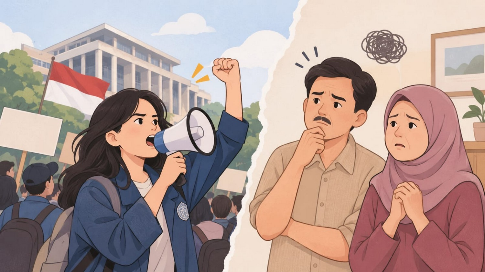

Anak Ikut Demo Mahasiswa, Orangtua Bersuara: Bangga, Khawatir, dan Tak Terima Dituding Bayaran

BANDUNG, ParentSpace — Sejumlah orangtua mahasiswa Universitas Trisakti menyuarakan tanggapan atas keikutsertaan anak-anak mereka dalam aksi demonstrasi mahasiswa di Jakarta pada Kamis (29/10/2026). Tanggapannya beragam, mulai dari bangga dan khawatir, hingga tidak terima ketika anak mereka dituding sebagai peserta bayaran.
Dilansir dari IDN Times, ratusan mahasiswa Trisakti berdemonstrasi di kawasan Patung Kuda dan Jalan Medan Merdeka Selatan, Jakarta Pusat, dengan membawa Tiga Tuntutan Rakyat (Tritura). Aksi tersebut disebut berakhir damai atas inisiatif massa, sementara perwakilan Istana menerima aspirasi mahasiswa.
Dilansir dari Kalderanews.com, tuntutan itu mencakup pemulihan kondisi nasional di bidang ekonomi, ekologi, politik, pendidikan, dan kesehatan; pemberantasan inkompetensi pejabat serta penghapusan rangkap jabatan; dan penegakan supremasi sipil. Dalam perjalanan, rombongan mahasiswa sempat beberapa kali diadang aparat hingga terjadi aksi saling dorong.
Setelah aksi itu, perbincangan di media sosial tidak hanya soal tuntutan mahasiswa, tetapi juga suara para orangtua. Melalui akun Instagram @info_jakartapusat, disebutkan bahwa sejumlah orangtua mahasiswa Trisakti menyuarakan pembelaan terhadap anak-anak mereka lewat unggahan di Threads dan menegaskan bahwa anak mereka bukan mahasiswa bayaran.
Salah satu yang menarik perhatian datang dari akun @ibu.tia. Ia menulis bahwa ini pengalaman pertama anaknya ikut demo, dengan perasaan bangga sekaligus khawatir, apalagi anaknya sulit dihubungi. Ia mengaku sedikit lega setelah melihat wajah sang anak yang tampak girang dalam video yang beredar.
Cerita lain datang dari akun @tianapottag di Threads. Dilansir dari Kalderanews.com, ia mengaku memiliki anak berusia 19 tahun yang ikut aksi pada 29 Oktober 2026 dan ia mendukungnya sepenuhnya. Namun, anaknya sempat mengirim pesan bahwa ia takut, yakni “Doain Ma, aku takut asline”.
Alih-alih membawa uang seperti yang dituduhkan, sang anak justru meminta isi ulang saldo dompet digital. Sang ibu menegaskan bahwa dirinyalah yang membiayai pendidikan dan uang saku anaknya.
Kekhawatiran juga muncul dari akun @dwina_fanniaofficial. Dalam unggahan di Threads, ia mengaku sebagai orangtua yang cemas dan kepikiran karena anaknya sedang berada di jalan tanpa kabar, lalu merasa lega sekaligus menghargai kejujuran sang anak yang mengaku ikut demo. Ia juga menyindir tudingan bahwa peserta aksi dibayar dengan nasi bungkus Rp35 ribu, karena menurutnya jumlah itu tidak cukup untuk kopi dan jajan anak-anaknya.
Dilansir dari Kalderanews.com, sejumlah orangtua lain menyindir nominal Rp100.000 yang disebut-sebut sebagai bayaran. Mereka menilai jumlah itu tidak sebanding dengan uang jajan dan kebutuhan harian anak mereka. Dilansir dari Pewarta Nusantara, beberapa orangtua menjelaskan bahwa uang yang dipegang anak-anak mereka berasal dari keluarga sendiri sebagai bekal, bukan dari pihak yang mengorganisasi aksi. Bagi mereka, keikutsertaan anak dalam demonstrasi adalah bagian dari hak warga negara untuk menyampaikan pendapat.
Orangtua Cemas di Tengah Tudingan Peserta Bayaran
Tudingan soal bayaran ini muncul di tengah rangkaian peristiwa lain. Dilansir dari Kalderanews.com, pada hari yang sama seorang peserta acara Deklarasi Sumpah Pemuda Mahasiswa Indonesia di Bundaran HI viral karena mengenakan jaket almamater sebuah kampus, lalu mengaku bukan mahasiswa dan dibayar oleh komunitas tertentu.
Ada pula informasi tentang seorang pria yang diduga menawarkan uang kepada mahasiswa Trisakti, yang disebut langsung ditolak. Dalam laporan yang dirujuk ParentSpace, tudingan bahwa mahasiswa Trisakti menerima bayaran tidak disertai bukti, dan para orangtua yang bersuara membantahnya.
Terlepas dari sikap terhadap isi tuntutan, cerita para orangtua ini menunjukkan sisi yang jarang disorot: bagaimana orangtua menyikapi anak dewasa muda yang memilih menyuarakan pendapatnya di ruang publik. Ada yang memilih mendukung, ada yang tetap cemas, dan ada yang lebih dulu memastikan anaknya aman.
Kunci yang tampak dari kisah-kisah ini adalah komunikasi yang tetap terbuka. Anak berani jujur bahwa ia ikut aksi, dan orangtua bisa tetap menjadi tempat anak mengabari kondisinya, meminta doa, atau sekadar mengisi saldo untuk pulang dengan selamat.
Oleh: Fathiya Hanin Zahrani Qolbi
Sumber
Kalderanews.com (31 Oktober 2026). Viral! Orang Tua Mahasiswa Trisakti Geram Anaknya Dituding Pendemo Bayaran. kalderanews.com
Pewarta Nusantara. Tak Terima Anak Trisakti Dituding Mahasiswa Bayaran, Sejumlah Orang Tua Turun Langsung Beri Pembelaan. pewartanusantara.com
IDN Times (31 Oktober 2026). 13 Fakta Demo Mahasiswa 28–29 Oktober 2026 di Jakarta. idntimes.com
Unggahan Instagram @info_jakartapusat; unggahan Threads @ibu.tia dan @dwina_fanniaofficial.